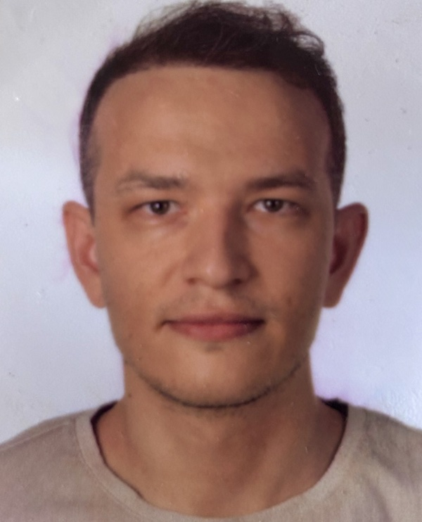

Welcome
I am a digital signal processing researcher studying complex dynamic systems — especially the brain — with signal processing, statistical modeling, pattern recognition and machine learning.
I am a Dr. Research Assistant in the Mechatronics Engineering Department at Bursa Technical University. My work focuses on multi-channel EEG analysis: building robust pipelines for artifact handling and feature extraction, and identifying neural biomarkers for clinical and cognitive neuroscience, including Parkinson's disease.
Research interests
Biomedical signals
EEG and EMG biomarkers and neural applications.
Signal processing
Adaptive filtering, time–frequency analysis, wavelets and spectral estimation.
Machine learning
Pattern recognition, classification, feature extraction and statistical modeling.
Information theory
Probabilistic inference, entropy and mutual information.
Latest Lab Notes
News
- Fall 2026Teaching Probability and Statistics at Bursa Technical University.
- 2026Visiting researcher at CIMeC, University of Trento (June–August), working on MEG and predictive brain theory with Dr. Ingmar De Vries.
- 2026Neural Resonance selected as one of 10 featured projects in the FENS Art & Science Initiative for the FENS Forum 2026.
- 2026Received an EEG101 Conference Grant from COST Action CA24148.
- 2026New paper in GeroScience on EEG entropy as a biomarker for Parkinson's disease progression.
- 2025Completed my Ph.D. in Electrical and Electronics Engineering at Izmir Institute of Technology.